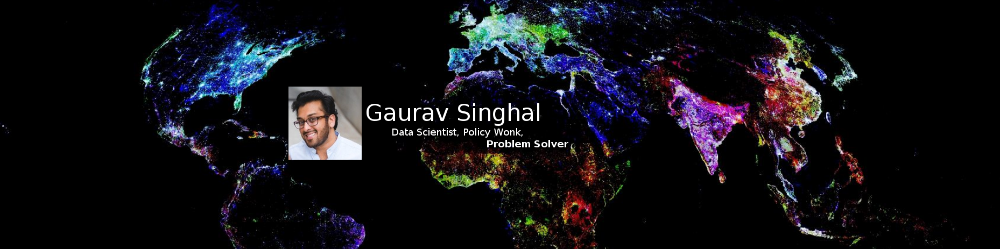
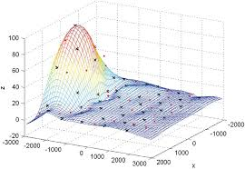
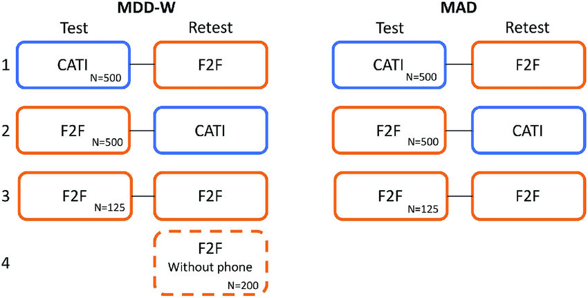
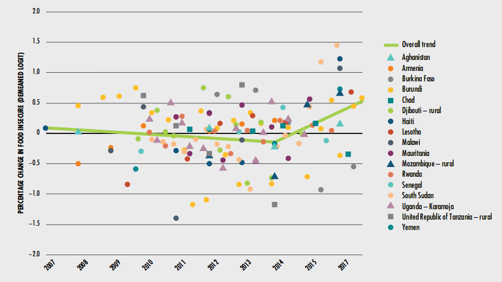
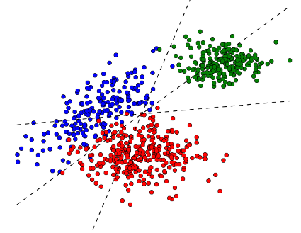

About Me
I am a humanitarian and data scientist, working at the intersection of computer science, economics, and public policy. As a data scientist I uncover signals hidden in complex datasets using machine learning, advanced statistics, mathematical modeling, and rich visualization. As a humanitarian I seek to connect these discoveries to applications that create meaningful change in people's lives. Through a deeper, richer understanding of human society and history, I seek to give data 'a voice' - letting it speak for itself - enabling human action to advance social equality, economic opportunity, and environmental sustainability.
| Professional Specializations |
Other Skills |
|---|---|
| • Programming: R, Python, MATLAB | • Public Speaking |
| • Database: SQL, MongoDB, Neo4J | • Macro & Micro-economics |
| • Machine Learning: Neural Networks, Gaussian Processes, Online |
• Food Security/Conflict Analysis |
| • Statistics: Bayesian, Geospatial, Econometrics, Demographic/Survey |
• Solidity/Blockchain programming |
| • Data-Collection Methods: Survey Design, Design of Experiments, Remote Sensing, Institutional Data |
• Film-making/Video-editing |
| • Visualization: QGIS, Tableau | • Web programming |
Professional Experience
Lead Data Scientist
UN World Food Programme Rome, Italy |
Founded a team that even today is transforming the way WFP gathers, measures, and disseminates information on the food security of nations during times of war, climate shocks, and other extreme events. We devised ways to provide near real-time information on food prices, food security, and scarcity of essentials using a combination of mobile-based surveys, call-detail records, satellite imagery, and crowd-sourcing. It was and continues to be an immense challenge, comprising original research in social statistics, applied research in a multitude of mathematical modeling domains (econometrics, simulatation, machine learning, etc), while building practical tools and infrastructure aimed at empowering individuals in the field. |
Junior Researcher
William Davidson Institute Ann Arbor, Michigan, USA |
Researched and modeled vaccine and essential medicine supply chains for rural public health clinics under a grant from the Bill & Melinda Gates Foundation. I delivered two projects. The first, an impact evaluation study on mobile-phone-based inventory systems, required field data collection in the tribal areas of Arunachal Pradesh, India. The second project comprised a model and recommendation system for minimizing stockout at public health clinics in Tanzania via trans-shipment of essential medicines between neighboring clinics. |
Analytics Consultant & Developer
Accenture Chicago, Illinois, USA |
Lead developer for a machine-learning based work-queue optimization tool for health payers, that automatically detected, categorized, and prioritized manual claim adjudication rework. This was an industry first, and a novel application within the field of analytics. I also researched active learning and multi-classification SVMs. I co-authored and presented a paper at the International Journal Conference on Neural Networks |
Analyst
Accenture Chicago, Illinois, USA |
Engaged in several projects ranging from IT to strategy. Most notably, I lead statistical analysis for Accenture's 2009 High Performance Metrics Study for Health Payers, collecting and profiling operating and financial performance across 517 different measures for health plans across the country. I was the primary author of the resulting white paper, and presented findings to C-level staff for interested clients. |
Education
Masters of Economics |
Former Joint PhD Candidate in Information Science and Economics—completed all PhD course requirements |
Masters of Information |
STIET Fellow: NSF IGERT fellowship awarded to develop researchers at the intersection of Computer Science and Economics as part of University of Michigan's STIET Lab (Socio-Technical Infrastructure for Electronic Transactions) |
Bachelors of Mechanical |
additional minors in electrical engineering, economics, philosophy |
Selected Publications
 |
A novel approach using Gaussian Processes to produce de-biased estimates of food insecurity in Yemen from noisy data sources Now-casting food insecurity in Yemen |
 |
Proving the efficacy of mobile-phone based surveys for studying women's diets Strengths and limitations of computer assisted telephone interviews (CATI) for nutrition data collection in rural Kenya |
 |
Premiere UN Report on Food Security and Nutrition - showed existence of structural break in trands State of Food Security & Nutrition in the World 2017 |
Best Paper award at Humanitarian Tech Conference, 2016. mVAM: A New Contribution to the Information Ecology of Humanitarian Work |
|
 |
At the time a novel, ultra-fast method for doing multi-classification with SVMs Piecewise Multi-Class Support Vector Machines |
Connect